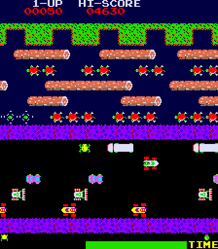

Fortune?
Giving Back
What Image Goes here?!
Scratch An Itch!
More Than You Can Chew?
Plugin/Extension
GitHub
De Facto OSS Repository
Issues
- Collaboration of One (To Start)
- Low Hanging Fruit » help wanted
Tests
- Improve Quality
- Inspire Confidence In Potential Contributors
Samples
- Living Documentation
- Show Best Practices
Docs
- Too early, and they bit rot or get out of sync
- API docs important, but don't underestimate tutorials
Continuous Integration
Timing

Leverage Existing Communities
- Mainling Lists/Google Groups
- Social Media
- Forums